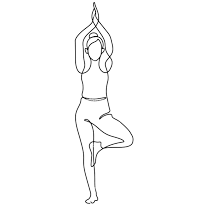

Esta actividad se sustenta en tres pilares básicos: la respiración (Pranayama), las posturas (asanas) y las secuencias de posturas (vinyasa-krama) . Tres conceptos que van unidos, siendo la respiración la llave que nos permitirá llegar a la concentración necesaria para indagar en cada postura individual y movernos de una a otra.
La postura de yoga (asana) no es un fin en si mismo, sino un medio para alcanzar, a través de la concentración, el bienestar tanto corporal como mental. Cada postura que realicemos debe ser un motivo para prestar atención a nuestro cuerpo, conocer como mente y cuerpo reaccionan y evolucionan conforme ejecutamos la postura.
Es importante recordar que las posturas se deben realizar sin forzar, yendo paso a paso y nunca a través del dolor.
Posturas Basicas
Sukhasana (Postura fácil)
Descripción: Postuzra con la que podemos comenzar la práctica de yoga. La columna se alarga mientras los hombros se relajan y la barbilla queda paralela al suelo. Debemos intentar sentarnos sobre los isquiones y cruzar las piernas sin que la incomodidad de la postura impida que os concentréis en la respiración y en vuestro cuerpo.
Beneficios: Relajación, fortalecimiento de la espalda y flexibilidad en rodillas y tobillos.
Contraindicaciones: Personas con problemas de rodilla.
Grupos musculares involucrados: pelvis y musculatura de soporte de la columna vertebral.
Contra-postura: Balasana (Postura del niño)
Tadasana (Postura de la montaña)
Descripción: Una postura que requiere que indaguemos en nuestro cuerpo tomando conciencia de todo él. Postura que suele ser el inicio de otras asanas realizadas de pie. La postura debemos realizarla de pie, con los pies juntos, separados el ancho de nuestras caderas, brazos estirados, cadera elevada, glúteos relajados, bajando el sacro y el pecho un poco elevado. La cabeza mirando al frente de forma que la coronilla ayude a verticalizar el cuerpo. Los hombros deben estar relajados y los pies deben enraizarse en su totalidad (dedos, planta y talón) intentando mantener el arco natural de nuestro pie, sin descargar todo el peso sobre los talones intentando distribuir el peso por igual formando un triangulo (talón y extremos distales del 1er y 5º metatarsiano).
Beneficios: Toma de conciencia de los apoyos de nuestro pie y de los desequilibrios de nuestra espalda y cadera.
Contraindicaciones: Personas con tensión baja o dolores de cabeza.
Grupos musculares involucrados: La columna y los brazos están en extensión pero sin contraer los hombros. El arco plantar debe estar activado.
Balasana (Postura del niño)
Descripción: postura en la que buscamos recuperar la calma y sentir la respiración, abriendo y alargando la espalda. Para realizar esta postura nos plegaremos sentándonos sobre los talones y las costillas deberán quedar sobre los muslos. dejando los brazos relajados al lado del cuerpo. La cabeza puede quedar con la frente en el suelo o sobre las manos. En esta postura deberemos observar como la respiración afecta a nuestra zona abdominal.
Beneficios: Relaja la musculatura de la espalda y libera presión sobre el nervio ciático.
Contraindicaciones: Si tenemos hipertensión, la cabeza se elevará y la barbilla quedará sobre las manos. En caso de embarazo, separar las rodillas para asegurarnos de no presionar el abdomen.
Grupos musculares involucrados: Extensión de los músculos de la columna por la flexión de la espalda, de los tibiales y extensores de los dedos al doblar las rodillas y de los isquiotibiales y glúteos por la rotación de la cadera.
Contrapostura: Bhujangasana (Postura de la Cobra).
Dwi Pada Pitham (La mesa de las dos patas)
Descripción: Una postura que comienza tumbado boca arriba en la que recogemos las piernas y acercamos los pies a los glúteos, para posteriormente levantar la cadera vértebra a vértebra con la fuerza de nuestras piernas. En esta postura nuestras cervicales deben quedar estiradas y evitar hacer un esfuerzo indebido con el cuello. La vuelta a la posición de tumbado debe llevarse a cabo lentamente en orden inverso al que hemos seguido para alcanzar esta asana.
Beneficios: la columna y amplia el pecho. Fortalece piernas y glúteos
Contraindicaciones: En lesiones de cuello o problemas cervicales
Grupos musculares involucrados: Cuádriceps, recto abdominal y contracción de isquiotibiales y glúteo mayor.
Contrapostura: Balasana (Postura del niño) o Padahastasana (Flexión de tronco de pie)
Bidalasana (Postura del gato) y Marjaryasana (Postura de la vaca)
Descripción: Ambas posturas parten de la posición “a gatas”, con las piernas abiertas el ancho de las caderas y las rodillas alineadas con ésta. Colocamos los hombros, codos y muñecas formando una línea perpendicular al suelo. Al inhalar nuestra espalda se curva hacia el suelo (Marjaryasana) y al exhalar arqueamos la espalda dirigiéndola hacia el techo (Bidalasana)
Beneficios: Relaja y fortalece la musculatura de la espalda y la zona pélvica. Movilizan toda la columna.
Contraindicaciones: con lesiones de cuello mantener el cuello en linea con el suelo.
Grupos musculares involucrados: Abdominales y músculos de la columna
Contrapostura: una de la otra.
Adho Mukha Svanasana (Postura del perro boca abajo)
Descripción: Asana clave en nuestras prácticas de yoga y que con el tiempo aprenderemos a disfrutar y utilizarla como transición a otras e incluso como postura para encontrar la calma necesaria. Desde la postura “a gatas” elevamos la cadera llevándola todo lo que podamos hacia arriba y hacia atrás. Se puede entender la postura como una “V” invertida. El cuello se debe relajar y los hombros deben quedar alejados de las orejas. En esta postura debemos buscar la comodidad dentro de la dificultad que pueda plantearnos. Al comenzar a practicar esta asana lo importante es que nuestra espalda se alargue aunque en un inicio no podamos estirar las piernas ni llegar con los talones a tocar el suelo.
Beneficios: Una de las posturas que más beneficia tras una larga carrera. Fortalece la espalda.
Contraindicaciones: —
Grupos musculares involucrados: La columna debe estar neutra, los gemelos, isquiotibiales y glúteos se encuentran en extensión mientras que dorsales, deltoides y los músculos de la mano y muñeca están en contracción concéntrica.
Contrapostura: Bhujangasana (Postura de la Cobra).
Bhujangasana (Postura de la Cobra)
Descripción: Desde el suelo, colocaremos las manos a la altura del pecho, con las manos activas y la ayuda de los brazos, elevaremos la cabeza y el corazón al inhalar, tirando los hombros hacia atrás, abriendo el pecho y empujando la pelvis hacia abajo. En esta “asana” mantendremos las piernas y glúteos activos para ayudar a que las piernas se mantengan alineadas pero evitando la contracción de los glúteos
Beneficios: Flexibilidad de la columna
Contraindicaciones: Hernias o lordosis.
Grupos musculares involucrados: Psoas mayor e Ilíaco, inquisitoriales, tríceps. La elevación se realizará mediante el tríceps y la contracción concéntrica de extensores de la columna torácica y excéntrica de los flexores de cervicales y lumbares.
Contrapostura: Adho Mukha Svanasana (Postura del perro boca abajo) y Balasana (Postura del niño).
Utkatasana (silla)
Descripción: Una postura a la que habitualmente llegaremos desde la postura del perro cabeza abajo (Adho Mukha Svanasan) acercando los pies a las manos o desde la postura de pie simplemente flexionando las rodillas. Para realizar correctamente esta postura los pies deben estar juntos y paralelos, manteniendo el peso repartido en la base, las rodillas flexionas, elevando el pecho y los brazos intentando mantener la curvatura natural de tu espalda. Los brazos se mantendrán estirados y paralelos. La postura debe ser cómoda dentro de la tensión que soportarán nuestras piernas manteniéndola durante tres respiraciones.
Beneficios: Fortalece tanto extremidades inferiores como brazos y hombros.
Contraindicaciones: Problemas de tensión o problemas de lumbares.
Grupos musculares involucrados: En esta postura intervienen numerosos grupos musculares, siendo los de mayor requerimiento: cuádriceps, abductor, isquiotibiales y glúteos
Contrapostura: Uttanasana (Flexión de pie)
Uttanasana (Flexión de tronco de Pie)
Descripción: Postura que nos debe servir como contra-postura de otras en las que nuestras piernas sufran mayor esfuerzo. Nuestros brazos deben estar relajados al igual que nuestro cuello y hombros. La propia gravedad debe ser quien haga el trabajo para flexionar nuestra columna.
Beneficios: Postura para estirar isquiotibiales y relajar la espalda
Contraindicaciones: En caso de notar exceso de esfuerzo, doblar las rodillas.
Grupos musculares involucrados: Gemelos, isquiotibiales y músculos de la columna.
Contrapostura: Utkatasana (silla)
Vrikshasana (Árbol)

Descripción: Una postura con la que iremos mejorando nuestra conciencia del equilibrio y que tanto en su construcción como al deshacerla no debemos perder la concentración. Para llegar a ella partiremos de la postura de Tadasana (Postura de la montaña), dejamos el peso sobre una de las plantas de nuestro pie y levantamos ligeramente el otro. Abriendo la pelvis, colocaremos el pie en el aire sobre la cara interna de la otra pierna a la altura del abductor. Una vez estemos estables en esa postura intermedia, elevamos los brazos y unimos las palmas manteniendo los hombros relajados. Para deshacer la postura seguiremos el orden inverso intentando no perder el equilibrio mientras lo hacemos.
Beneficios: Mejora el equilibrio y la estabilidad. Fortalece la musculatura del pie y tobillo.
Contraindicaciones: Si no podemos mantener el pie apoyado tan arriba, lo podemos bajar pero nunca apoyarlo sobre la articulación de la rodilla.
Grupos musculares involucrados: Tibial anterior, gemelos y sóleos y músculos del pie soportan la mayor carga y el glúteo mediano y menor, tensor de la fascia lata y el abductor se encargan en mayor medida de mantener nuestro equilibrio.
Contrapostura: Adho Mukha Svanasana (Postura del perro boca abajo) nos ayudará a estirar gemelo y soleo tras esta postura.
Utthita Trikonasana (Triángulo extendido)
Descripción: Desde la postura de pie o tadasana llevamos el pie izquierdo hacia atrás apoyando el talón, girando a continuación el cuerpo hacia el lado largo de la esterilla. Colocamos los brazos en cruz, manteniendo las piernas rectas y sin modificar la postura de los brazos, en una exhalación bajaremos nuestro cuerpo hacia el lado derecho. En la postura debemos mantener la espalda recta, el pecho abierto y la cadera alineada. El brazo de arriba debe servir para tirar y sujetar nuestro cuerpo evitando que dejemos el peso sobre la mano de abajo. Una forma de salir de esta postura puede realizarse bajando el brazo y colocando una mano a cada lado del pie derecho a la misma vez que flexionamos la pierna para que las palmas de las manos apoyen completamente en el suelo y así poder llevar el pie derecho hacia atrás y llegar a la postura de Adho Mukha Svanasan. Esta postura se repetirá con la otra pierna para lograr un correcto equilibrio en nuestro cuerpo.
Beneficios: Estirar y fortalece diversos grupos musculares, tanto de la extremidades inferiores como del tronco.
Contraindicaciones: Si existen problemas de cervicales o cuello no se debe girar la cabeza hacia el techo.
Grupos musculares involucrados: Glúteo, tensor de la fascia lata y oblicuo interno del lado e isquiotibiales de ambas piernas.
Contrapostura: misma postura con la pierna cambiada.
Phalakasana (tabla o plank)
Descripción: Una postura que parte de la fuerza de nuestro abdomen. A la que podemos llegar desde Adho Mukha Svanasana (Postura del perro boca abajo) bajando la cadera. Activamos el abdomen y mantenemos la espalda recta y los brazos estirados. Las muñecas deben quedar debajo de los hombros y todo el cuerpo debe estar firme. Es importante evitar la flexión de la cadera ya que contraeremos la zona lumbar, para evitarlo nuestro abdomen debe estar firme y hacia arriba. Podemos permanecer en la postura una respiración completa e ir aumentando las respiraciones en esta postura conforme vayamos ganando fuerza.
Beneficios: Fortalece los músculos abdominales y brazos, muñecas y hombros. Estira y fortalece la espalda.
Contraindicaciones: Si tenemos síndrome del túnel carpiano esta postura está contraindicada, podremos hacerla apoyando antebrazos en el suelo.
Grupos musculares involucrados: Musculatura abdominal (recto y oblicuos), tríceps, bíceps, pectorales, cuádriceps e isquiotibiales.
Contrapostura: Bhujangasana (Postura de la Cobra)
Chaturanga dandasana
Descripción: Postura a la que podemos llegar desde la postura de Phalakasana (tabla o plank) o directamente desde la postura de Adho Mukha Svanasana. Las piernas deben estar activas, los talones estirando hacia atrás y los codos pegados a las costillas. El cuello debe permanecer en linea con la columna. La falta de fuerza en los brazos puede hacer que nuestra cadera se flexione, por lo que debemos contrarrestarlo con una mayor acción en isquiotibiales y concentración en la parte abdominal. De esta postura podemos pasar directamente al suelo o a Bhujangasana (Postura de la Cobra)
Beneficios: Fortalece los músculos abdominales, brazos y muñecas.
Contraindicaciones: Esta postura está contraindicada si tenemos síndrome del túnel carpiano o en caso de embarazo.
Grupos musculares involucrados: Musculatura abdominal (recto y oblicuos), serrato anterior. tríceps, bíceps, pectorales, cuádriceps e isquiotibiales.
Contrapostura: Bhujangasana (Postura de la Cobra)
Todos los derechos de autor